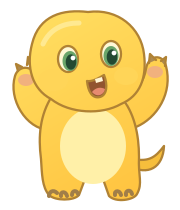

一场很新的校园游击展览
找个好位置，把奶龙摆成校园顶流。安保来了？抱起就跑。
OPERATION: NAILOONG
3 分钟，24 人打卡。在安保收走立牌前，把快乐传出去。
TAKE A LITTLE BREAK
校园时间暂停了，放心摸鱼。
CAMPUS SUPERSTAR
选个好位置方向键 / WASD 移动，或点击地图寻路。食堂打卡快，树林能藏身。按 E 或空格放下立牌。
等同学来打卡站在立牌附近的同学会自动拍照，每人只算一次。打卡得好感，可以购买右侧三种升级。
安保来了就搬家黄色视野变红时，赶快靠近立牌按 E 抱走。按住 Shift 冲刺；抱龙躲进树荫能避开远处视线。
撑到下课就算赢3 分钟内达成打卡目标，并保住至少 1 张立牌。立牌被撤或抱龙被追上会损失 1 张，南门有备用立牌。
格子地图与 Canvas 循环参考 Straker · Basic Bomberman（CC0）↗；校园规则、AI、经营系统和界面为本项目编写。
奶龙造型参考 第七印象奶龙官网 ↗，游戏内使用手绘简化 SVG 同人立牌。
下载这一版完整源码 ↗ · 下载离线版 ↗ · 奶龙 SVG 立牌 ↗